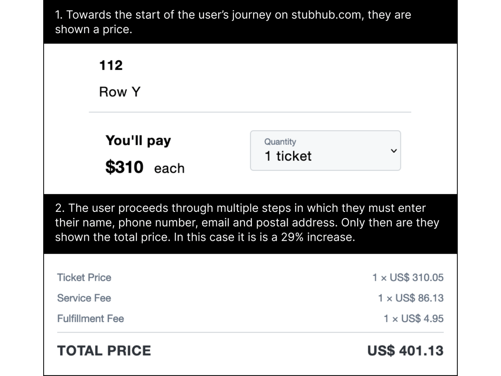

Hidden costs involve obscuring or omitting additional fees, charges, or costs until the user is well into the purchasing or sign-up process. By that point, the user has already invested time and effort into the transaction and is more likely to proceed despite the unexpected costs.
Ticket reseller Stubhub used hidden costs to drive revenue. Their method was to advertise a low price, draw users in through a lengthy series of steps, and then at the end immediately prior to payment, reveal a final higher price. At that point, the user had already spent time and energy, so they had to weigh up the time and energy cost of trying to find a cheaper price elsewhere (and risk of failing) versus just paying up. This is detailed in the research paper Price Salience and Product Choice (Blake et. al, 2021), who reported that users who were who weren’t shown the ticket fees upfront spent about 21% more money and were 14.1% more likely to complete a purchase.
